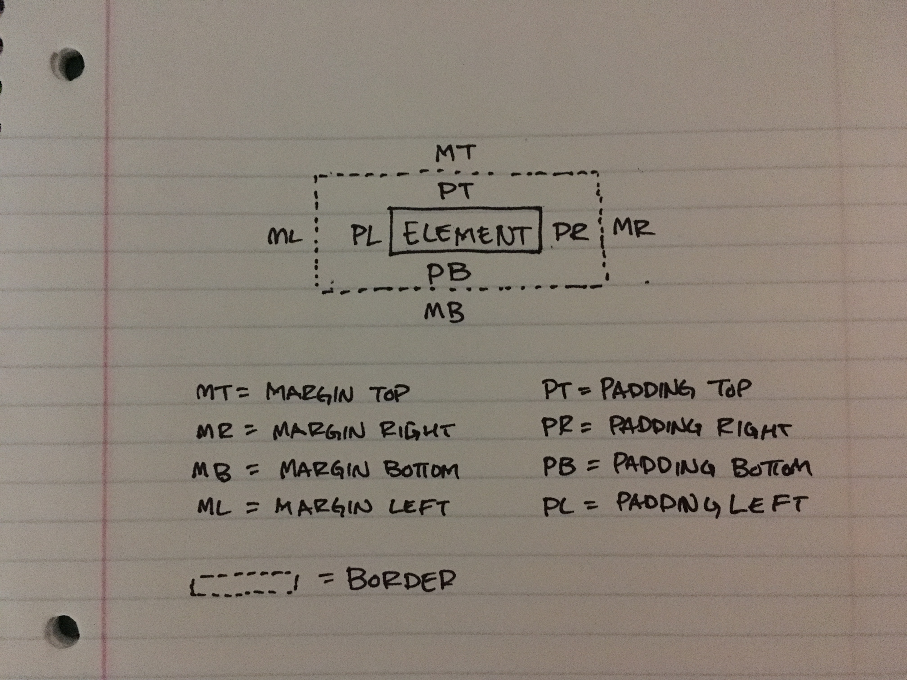

WEEK 3
EXPLORING CSS
DECEMBER 16, 2015
This is the third week of Dev Bootcamp and we focused on expanding our knowledge of CSS. To start off, CSS stands for Cascading Style Sheets and it describes how a page or document on the web should be displayed. It's usually a separate document that is linked to an HTML page in the tag and via the tag. It wasn't a super difficult subject to learn, but I'd be joking if I said that positioning didn't frustate the life out of me. Let's just say there was a lot of type this, refresh, view, erase, type that, refresh, view, erase, and so on.
The margin is the outermost space of an element. It's the blank space outside of the border and in-between elements.
The border is the line dividing the margin and the padding.
The padding is the inner most space right up against the element.
- What are the best practices associated with using classes vs. ids?
- What are the difference between relative, absolute, fixed, and static positioning?
- What does it mean to display inline vs using inline block?
What is the difference between margin, border, and padding?
If there are multiple elements that require the same styling, then classes should be used, otherwise an ID that's specific to one particular element can be used. I think of classes as like uniforms that students of the same school use. Everyone can be different, but they can all wear the same uniforms.
Static positioning is the default position and will try to position itself exactly to it's location on the HTML page - i.e. if the page is a paragraph, paragraph, image, static element, then it will position itself after the image. Relative is similar to static in that it uses the html's flow to determine position. The difference with relative though is it uses the top, bottom, left, and right attributes. It's a bit hard to explain so I'd advise making a simple page and trying it out to get an actual visual. Absolute is interesting because unlike the first two explained positioning, this one doesn't take into account the HTML's flow and the position is kind of hard set with numbers or percentages. Fixed is my favorite. This one is similar to absolute, but this one is relative to the browser window and you can see this in action with many navigation bars and the chatbox in facebook.
Displaying inline means the element is on the same exact line as other content, while inline block is similar except that it'll create a block in it's place. It's difficult for me to put into words so I created a visual below.